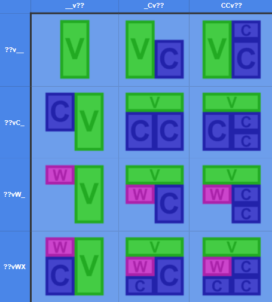
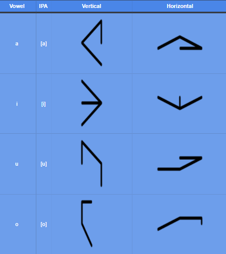
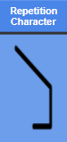
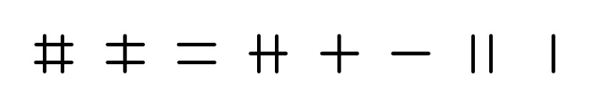
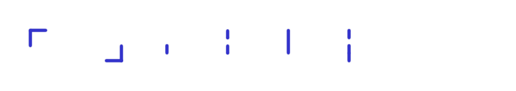

Kiaimliam is a constructed language I created in GT this year. Well, I say created I mean something more along the lines of started, languages are hard. To begin with some background, constructed languages are an "artform?" something like that wherein someone creates a language from scratch based on linguistic principles, and in my case, making things up out of thin air as you go and hoping they work out. This page showcases the progress on Kiaimliam as of this point. I will focus on the pronunciation, orthograthy, and limited grammar.
The language has a (c)(c)v(w)(x) maximum syllable structure, where w is a "soft" consonant and x is a "non-soft" consonant. There are 4 vowels: "a," "i," "u," and "o"; and 10 consonants: "m," "n," "l," "w," "b," "d," "k," "ʒ," ( romanized as "zh" ) "ɸ," ( romanized as "f" ) and "j" ( romanized as "y" ) The first four consonants are considered soft and the latter six non-soft. This is an arbituary distinction that I made up.
The Orthagraphy, or native writing system of the language ( as opposed to the romanization which is the way of writing the language purely with the latin alphabet, is written right to left, top to bottom, with each syllable packed into a block. All 12 different syllable blocks are shown in this diagram:
With each syllable being read starting in the bottom left hand corner and making an "n" shape upwards left and back down. Each of the 14 sounds has 2 distinct glyphs, for vowels a horizontal and a vertical form, and for consonants a short and tall form.
There is additionally a repetition marker that is used when the same syllable is repeated multiple times, it looks like this:
You can enter text in the romanization, some combination of letters in the list [ a, i, u, o, m, n, l, w, b, d, k, zh, f, y ], on the left and watch it be transormed into the orthagraphy on the right.
The grammar of Kiaimliam consists of a whole bunch of atomic affixes which can be combined to form larger words. This is the part of the project I most regret, and one of the first areas I intend to make heavy changes in in future revisions. I could list all the affixes here but there are a lot of them so I won't. I'll explain some particular affixes used by the short poem I wrote in the following section.
I wrote a short poem in Kiaimliam, it wasn't very good, nor was it really even about anything. The point of this exercise was to demonstrate that I had something of a lanaguage. Here is the poem in the romanization:
Bozhibozhokoni
Fad falilazhiok bozhibozhokoni
kabukuizhiyanya yi?
fad bozho kabukubikiizhoyanya
Which literally translates, taking each suffix to mean it's exact meaning, as:
Market
I travel market
apple (round, red, hard, food)?
I get ( literally take ) orange ( round, light-red, soft food )
Which could be more sensibly translated to mean something like this:
The Market
I went to the market
asked for an apple
but was given an orange
And while a silly poem about going to a store isn't particularly exciting on it's own the fact that you can express any ideas in the language makes me happy.
I have also created some punctuation and numbers for Kiaimliam, however they aren't the best and aren't in the font yet so it's only worth briefly touching on them. Them numbers form a tally-like system where one is a vertical line, two is a pair of vertical lines, three is a horizontal line, four is a horizontal line ( 3 ) and a vertical line ( 1 ), five is a horizontal line ( 3 ) and two vertical lines ( 2 ) and this continues up to 8 being two vertical lines ( 6 ) and two horizontal lines ( 2 ). All larger numbers are represented as a a number of eights, and then the remainder.
The punctuation consists, show here left to right, of a pair of nesting markers for disambiguating the order in which affixes are applied, a pause indicator, a short pause indicator, a long pause indicator, and an long pause with accent indicator which is basically just an exclamation point.
Making Kiaimliam was a really fun experience and I fully intend to continue this project. I would like to rework the grammar significantly, and make some punctuation changes accordingly. I would also like in future to just add more affixes and write more things in this language. I had a good time, and I hope you found this interesting. Making a language is hard.
A may be a decent web-developer, but I continue to be a bad web-designer. Apologies for the really bland layout.